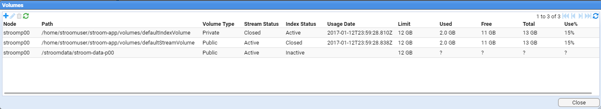
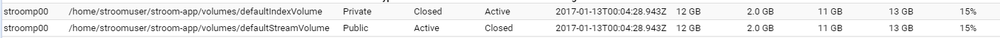
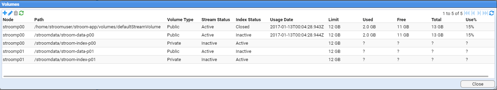
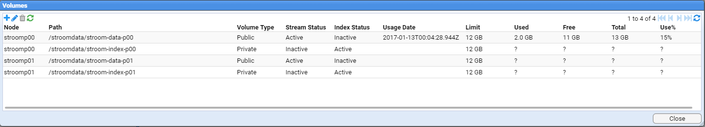

Stroom HOWTO - Volume Maintenance
Stroom stores data in volumes. These are the logical link to the Storage hierarchy we setup on the operating system. This HOWTO will demonstrate how one first sets up volumes and also how to add additional volumes if one expanded an existing Stroom cluster.
Assumptions
- an account with the
AdministratorApplication Permission is currently logged in. - we will add volumes as per the Multi Node Stroom deployment Storage hierarchy
Configure the Volumes
We need to configure the volumes for Stroom. The follow demonstrates adding the volumes for two nodes, but demonstrates the process for a single node deployment as well the volume maintenance needed when expanding a Multi Node Cluster when adding in a new node.
To configure the volumes, move to the Tools item of the Main Menu and select it to bring up the Tools sub-menu.

then move down and select the Volumes sub-item to be presented with the Volumes configuration window as seen below.

The attributes we see for each volume are
- Node - the processing node the volume resides on (this is just the node name entered when configuration the Stroom application)
- Path - the path to the volume
- Volume Type - The type of volume
- Public - to indicate that all nodes would access this volume
- Private - to indicate that only the local node will access this volume
- Stream Status
- Active - to store data within the volume
- Inactive - to NOT store data within the volume
- Closed - had stored data within the volume, but now no more data can be stored
- Index Status
- Active - to store index data within the volume
- Inactive - to NOT store index data within the volume
- Closed - had stored index data within the volume, but now no more index data can be stored
- Usage Date - the date and time the volume was last used
- Limit - the maximum amount of data the system will store on the volume
- Used - the amount of data in use on the volume
- Free - the amount of available storage on the volume
- Use% - the usage percentage
If you are setting up Stroom for the first time and you had accepted the default for the CREATE_DEFAULT_VOLUME_ON_START configuration option (true) when configuring the Stroom service application, you will see two default volumes have already been created. Had you set this option to false then the window would be empty.
Add Volumes
Now from our two node Stroom Cluster example, our storage hierarchy was
- Node:
stroomp00.strmdev00.org/stroomdata/stroom-data-p00- location to store Stroom application data files (events, etc.) for this node/stroomdata/stroom-index-p00- location to store Stroom application index files/stroomdata/stroom-working-p00- location to store Stroom application working files (e.g. temporary files, output, etc.) for this node/stroomdata/stroom-working-p00/proxy- location for Stroom proxy to store inbound data files
- Node:
stroomp01.strmdev00.org/stroomdata/stroom-data-p01- location to store Stroom application data files (events, etc.) for this node/stroomdata/stroom-index-p01- location to store Stroom application index files/stroomdata/stroom-working-p01- location to store Stroom application working files (e.g. temporary files, output, etc.) for this node/stroomdata/stroom-working-p01/proxy- location for Stroom proxy to store inbound data files
From this we need to create four volumes. On stroomp00.strmdev00.org we create
/stroomdata/stroom-data-p00- location to store Stroom application data files (events, etc.) for this node/stroomdata/stroom-index-p00- location to store Stroom application index files
and on stroomp01.strmdev00.org we create
/stroomdata/stroom-data-p01- location to store Stroom application data files (events, etc.) for this node/stroomdata/stroom-index-p01- location to store Stroom application index files
So the first step to configure a volume is to move the cursor to the New icon  in the top left of
the
in the top left of
the Volumes window and select it. This will bring up the Add Volume configuration window

As you can see, the entry box titles reflect the attributes of a volume. So we will add the first nodes data volume
/stroomdata/stroom-data-p00- location to store Stroom application data files (events, etc.) for this node for nodestroomp00.
If you move the the Node drop down entry box and select it you will be presented with a choice of available
nodes - in this case stroomp00 and stroomp01 as we have a two node cluster with these node names.

By selecting the node stroomp00 we see

To configure the rest of the attributes for this volume, we:
- enter the Path to our first node's data volume
- select a Volume Type of Public as this is a data volume we want all nodes to access
- select a Stream Status of Active to indicate we want to store data on it
- select an Index Status of Inactive as we do NOT want index data stored on it
- set a Limit of 12GB for allowed storage

and on selection of the
 we see the changes in the
we see the changes in the Volumes configuration window

We next add the first node's index volume, as per

And after adding the second node's volumes we are finally presented with our configured volumes

Delete Default Volumes
We now need to deal with our default volumes. We want to delete them.

So we move the cursor to the first volume's line (stroomp00 /home/stroomuser/stroom-app/volumes/defaultindexVolume ...) and select the line then move the cursor to the Delete icon  in the top left of the
in the top left of the Volumes window and select it. On selection you will be given a confirmation request

at which we press the
 button to see the first default volume has been deleted
button to see the first default volume has been deleted

and after we select then delete the second default volume( stroomp00 /home/stroomuser/stroom-app/volumes/defaultStreamVolume ...), we are left with

At this one can close the Volumes configuration window by pressing the
 button.
button.
NOTE: At the time of writing there is an issue regarding volumes
Stroom Github Issue 84 - https://github.com/gchq/stroom/issues/84
Due to Issue 84, if we delete volumes in a multi node environment, the deletion is not propagated to all other nodes in a cluster. Thus if we attempted to use the volumes we would get a database error. The current workaround is to restart all the Stroom applications which will cause a reload of all volume information. This MUST be done before sending any data to your multi-node Stroom cluster.
Adding new Volumes
When one expands a Multi Node Stroom cluster deployment, after the installation of the Stroom Proxy and Application software and services on the new node, one has to configure the new volumes that are on the new node. The following demonstrates this assuming we are adding
- the new node is
stroomp02 - the storage hierarchy for this node is
/stroomdata/stroom-data-p02- location to store Stroom application data files (events, etc.) for this node/stroomdata/stroom-index-p02- location to store Stroom application index files/stroomdata/stroom-working-p02- location to store Stroom application working files (e.g. tmp, output, etc.) for this node/stroomdata/stroom-working-p02/proxy- location for Stroom proxy to store inbound data files
From this we need to create two volumes on stroomp02
/stroomdata/stroom-data-p02- location to store Stroom application data files (events, etc.) for this node/stroomdata/stroom-index-p02- location to store Stroom application index files
To configure the volumes, move to the Tools item of the Main Menu and select it to bring up the Tools sub-menu.
then move down and select the Volumes sub-item to be presented with the Volumes configuration window as. We then move the cursor to
the New icon  in the top left of the
in the top left of the Volumes window and select it. This will bring up the Add Volume configuration window where we select our volume's node stroomp02.

We select this node and then configure the rest of the attributes for this data volume

then press the
 button.
button.
We then add another volume for the index volume for this node with attributes as per

And on pressing the  button we see our two new volumes for this node have been added.
button we see our two new volumes for this node have been added.

At this one can close the Volumes configuration window by pressing the
 button.
button.